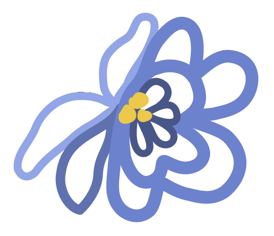

Obojky a vodítka na míru
Vyrobím obojek i vodítko pro vašeho pejska přesně podle vašich představ. Kvalitní kovové komponenty. Mnoho vzorů na výběr, plně pratelný materiál ze 100% bavlny. Ručně vyšívaná jmenovka s telefonním číslem.


Every Poy collar starts as fabric that's already lived a life — reworked, resized, and made just for your dog. Clothes get a second chapter too, with alterations and repairs done by hand, one piece at a time.
Get in Touch

meet the maker
Narodila jsem se v Přerově a do Prahy jsem přišla za studiem na FAMU. Aktuálně se živím jako koordinátorka odbavení letadel na pražském letišti a šití jsem se začala intenzivněji věnovat asi 2 roky zpátky, z potřeby uspokojit kreativní část své osobnosti.
Zajímám se o ekologická témata spojená s módou. Nejraději se proto věnuji šití z přírodních materiálů, baví mě upcyklovat nechtěný domácí textil, nebo z módy vyšlé kousky, které by jinak pravděpodobně skončily na skládce.
Materiály nacházím v sekáčích, nebo od známých a z pozůstalostí.
Smysl mi dává i upravování a opravování vašich oblíbených kousků.
Pro opravy a úpravy mě najdete na Praze 6, obojky samozřejmě i posílám. :)
what I make & mend
Vyrobím obojek i vodítko pro vašeho pejska přesně podle vašich představ. Kvalitní kovové komponenty. Mnoho vzorů na výběr, plně pratelný materiál ze 100% bavlny. Ručně vyšívaná jmenovka s telefonním číslem.

Máte oblíbený kousek, který potřebuje opravit? Díry, vytržené švy, rozbité zipy, upadlé knoflíky, s většinou věcí si dokážu poradit.

Nebo něco stoprocentně nesedí nebo nesluší? Dokážu zkrátit, zúžit, v rámci možností i prodloužit a rozšířit, upravit rukávy, výstřih,… Společně vymyslíme co s tím.

Máte konkrétní představu unikátního oděvu nebo produktu? Ráda poskytnu konzultaci a pokud se dohodneme, tak poskytnu kompletní realizaci.
follow along
say hello
Got a dog who needs a collar, or clothes that need a little care? Send a message and let's talk about it.